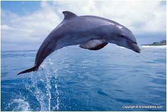
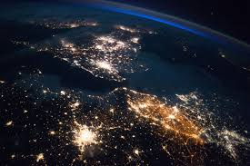
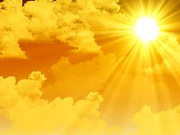

Welcome to my blog!
About Me!
My name is Diana Sagebiel. I have been lucky enough to have been exposed to multiple cultures from a young age. Traveling has always been a prominent part of my life and a passion. I orginate from Georgia, but my parents live in Flordia. From Italy to Mexico, other cultures have given me a broad perspective and respect of other countries. I hope to engage in an employment that allows me to continue to travel the world. I also love helping others and inspiring the youth to be the best they can be. Thanks for visiting my blog! I hope you have a happy reading!
Interesting facts about me
I am into lots of stuff and I like trying out new things every now and then. I believe that in order for a human being to live a full life, he or she must explore what is on offer and travel, love, learn, inspire, educate and impact other people and places in ways that will certainly leave a mark. Below is a very short list of things I enjoy doing when I am not in school.
- I love swimming
- I love dolphins
- I hike during the weekends
- I'll travel the whole world in one day!
- Meeting new people
Gallery (I know you'd like to see some dolphins :))
The world is such a wonderful place with many exotic places to visit. It's about time human beings started taking care of our planet, because we do not know any other home apart from this beautiful land. People should stop doing stuff that harm animals and the environment. We have to leave earth a better place than we found it. That said, find below some interesting of people, animals and our beautiful home :)



Schedule
Below is a small schedule on how I will be posting to this blog!
| Day | Article Time |
| Monday | 3:00PM |
| Tuesday | 8:00PM |
| Wednesday | 1:00PM |
| Thursday | 11:00AM |
| Friday | 10:00PM |
| Saturday | 4:00PM |
| Saturday | 6:00PM |